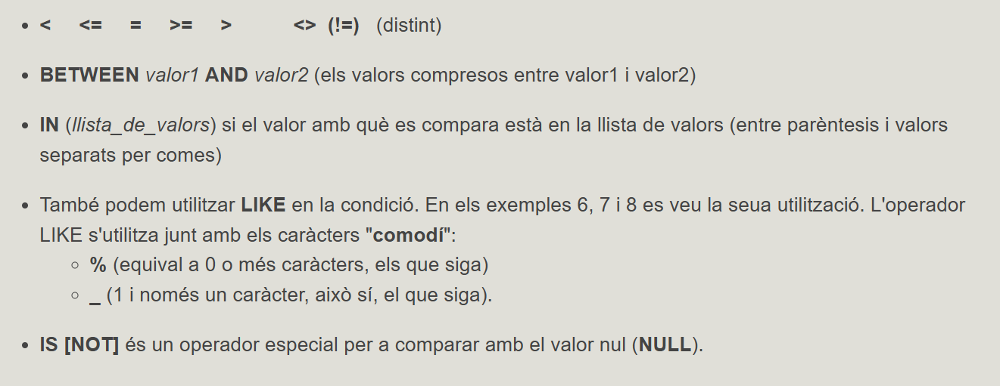

4. La clàusula WHERE
Ens servirà per establir filtres. Només eixiran les files que satisfacen la condició del filtre.
Sintaxi
SELECT <columnes>
FROM <taules>
WHERE <condició>;

Recordem per una altra banda com s'escriuen les constants:
-
les constants numèriques van tal qual, sense cometes ni res (amb el punt decimal, i no coma decimal)
-
les constants alfanumèriques (de text) van entre cometes simples
-
les constants de data van entre cometes simples, i PostgreSQL ja farà la conversió
-
per últim el valur nul s'escriu NULL
Exemples
1) Traure les comarques de la província de Castelló
SELECT *
FROM COMARQUES
WHERE provincia = 'Castelló';
SELECT *
FROM POBLACIONS
WHERE llengua = 'V';
SELECT *
FROM POBLACIONS
WHERE nom_c = 'Plana Alta' AND altura > 300;
SELECT *
FROM INSTITUTS
WHERE codpostal=12001 OR codpostal=12002 OR codpostal=12003;
SELECT *
FROM INSTITUTS
WHERE codpostal >= 12001 AND codpostal <= 12003;
SELECT *
FROM INSTITUTS
WHERE codpostal BETWEEN 12001 AND 12003;
SELECT *
FROM INSTITUTS
WHERE codpostal IN (12001,12002,12003);
SELECT *
FROM POBLACIONS
WHERE nom_c = 'Plana d''Utiel';
SELECT nom, nom_c
FROM POBLACIONS
WHERE nom LIKE 'G%';
SELECT *
FROM POBLACIONS
WHERE latitud LIKE '40º01____N';
SELECT *
FROM POBLACIONS
WHERE latitud LIKE '40º01''__"N';
SELECT *
FROM POBLACIONS
WHERE nom NOT LIKE '% %';
SELECT *
FROM INSTITUTS
WHERE numero IS NULL;
 Exercicis
Exercicis
Ex_7 Traure els clients de la ciutat amb codi 12309.
Ex_8 Traure totes les factures del mes de març de 2015.
Ex_9 Traure tots els articles de la categoria BjcOlimpia amb un stock entre2 i 7 unitats.
Ex_10 Traure tots els clients que no tenen introduït el codi
postal.
Ex_11 Traure tots els articles amb el stock introduït però que no tenen introduït el stock mínim.
Ex_12 Traure tots els clients , elprimer cognom dels quals és VILLALONGA.
Ex_13.a Modificar l'anterior per a traure tots els que són VILLALONGA
de primer o de segon cognom.
Ex_13.b Modificar l'anterior per a traure tots els que no són
VILLALONGA ni de primer ni de segon cognom.
Ex_14 Traure els articles "Pulsador " (la descripció conté aquesta
paraula), el preu dels quals oscila entre2 i 4 € i dels quals tenim un
stock estrictament major que el stock mínim.
Llicenciat sota la Llicència Creative Commons Reconeixement NoComercial CompartirIgual 3.0